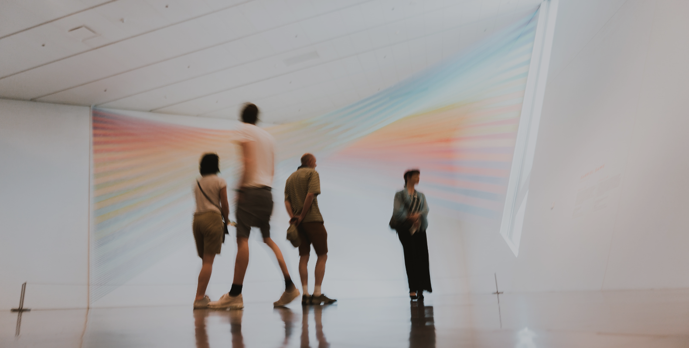
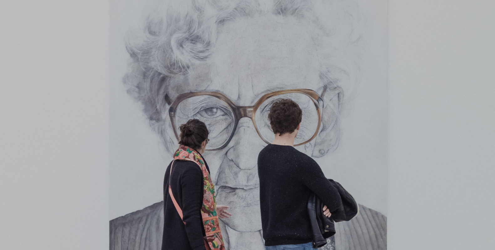

대전시립미술관
MUSEUM OF ART
대전시립미술관은 예술로 시민과 소통하는 장소로 시민에게 다양한
문화를 선사하고 새롭고 폭넓은 시민의 문화예술기반을 다양화하겠습니다.

PROJECT
-

열린수장고 개관전 : 예술의 자리
<예술의 자리>는 대전시립미술관 열린 수장고 개관전으로 대전시립미술관의 소장품 1357점 중 73점을 공개하는 전시이다. 열린 수장고는 출입이 엄격히 통제되는 수장고를 시민들이 언제든지 볼 수 있도록 공개하는 새로운 개념의 미술관이다.
대전시립미술관
2022-10-04 ~ 2023-03-31
-

넥스트코드 2022 : 전시 예정
<넥스트코드>는 지역미술의 미래를 짊어질 차세대 작가를 양성하는 프로젝트이다. 대전시립미술관의 청년작가지원전은 20년 동안 140여명의 역량 있는 청년작가들을 발굴했으며 이번 전시를 통해 젊은 작가들의 실험정신과 동시대적 미감이 반영된 다채로운 작업들을 만나볼 수 있다.
대전시립미술관
2022-11-29 ~ 2023-01-29